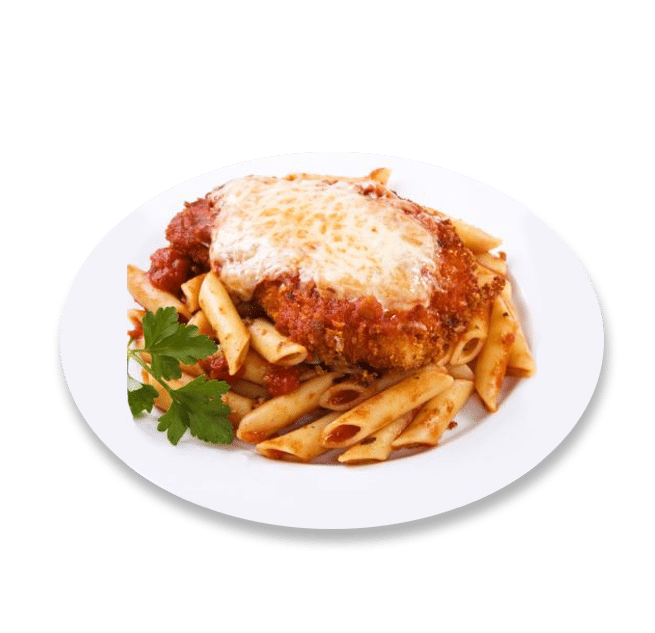
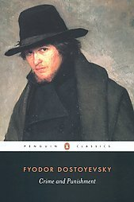

Conor Meade
A Trip I took
In October 2022, I took a trip down to State College Pennsylvania with three friends to watch the annual Penn State 'White Out' game.
This is a game where every fan dresses in White, the Nittany Lions' secondary color. We met up with another friend who was in his last year at Penn State university.
We drove from the Noth Shore of Massachusetts and it took about seven hours. It was a very fun weekend with cozy campfires, good food, hyped up tailgating, and a competitive football game.
I had a really fun time wathcing the game and experiencing a collge football experience that was very different from my own undergraduate football fan experience at the University of Massachusetts Amherst.
Pet Names & Fruits
- A goldfish named Cantaloupe Curtis
- A turtle named Banana Split
- A dog named Blueberry Bud
Favorite Restaurant
My Favorite Restaurant: The Border Cafe
The Border Cafe is my favorite restaurant. It offers a tex-mex style of food with a wide-ranging menu. I have been going there since I was a little kid.
The ambiance andd music really add to the experience and make every meal enjoyable. My favorite think to order is the blackened catfish fajitas.
The 'Border' has always been very close to my childhood home so I had many opportunities to try different menu items and experienc different parts of the restaurant.
Overall, I have never been disappointed with my dining experience there and wish them well!
Favorite Food

My favorite food is Chicken Parmesean. I like it best when it is served with either penne or linguini pasta. Also, there needs to be fresh tomato sauce and mozzarella cheese to make it perfect.
A proper chicken breading/crust is also key. The chicken needs bread crumbs, flour, salt, bread crumbs, olive oil, and eggs at the very least for a crunchy breading. Finally, I like to add some fresh parsly on top of everything to give a nice flavor profile
Favorite Books
| Book Name |
Book Cover |
Author |
Summary |
| Crime and Punishment |
 |
Fyodor Dostoevsky |
Examines the psychological trials of a student, Raskolnikov, after committing a gruesome murder. He is able to find redemption by accepting his suffering state and finding love. |
| Slaughterhouse-Five |
 |
Kurt Vonnegut Jr. |
A war novel that follows Billy Pilgrim in his life experiences and psychological trauma as a soldier in World War II. This book is an anti-war novel and uses dark comedy and satire to get this message across |
| Flowers For Algernon |
 |
Daniel Keyes |
Touches on the ethics and moral of treatments for the mentally disabled. The protagonist Charlie Gordon is given a surgery previosult only tested on mice, like Algernon, to improve his intellect. |
| The Myth of Sisyphus |
 |
Albert Camus |
Camus writes a series of psychological essays that examines the philosophies of Søren Kierkegaard, Arthur Schopenhauer, and Friedrich Nietzsche. The philosophy of the absurd, the conflict of finding meaning in the world, is discussed |